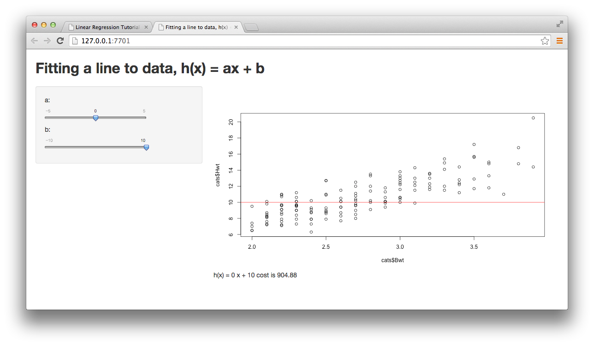
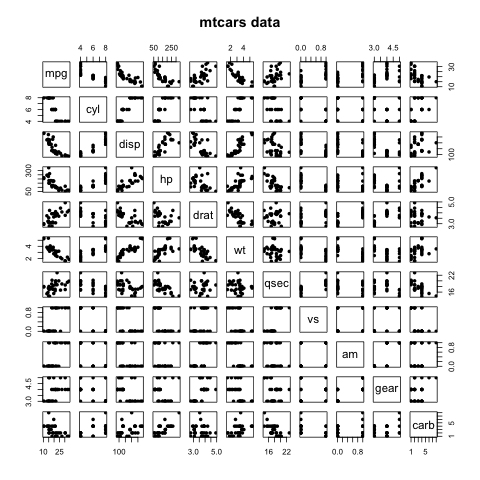
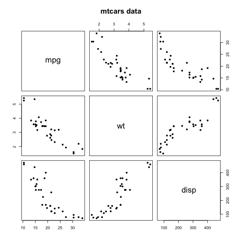
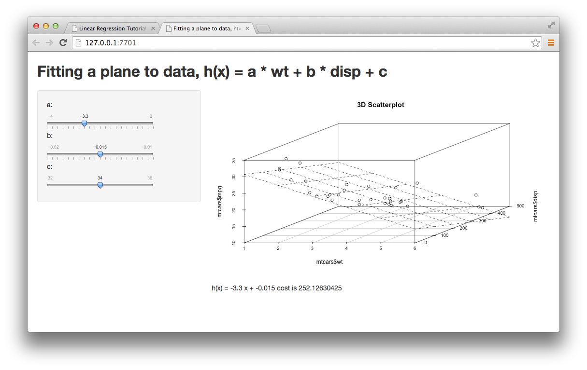
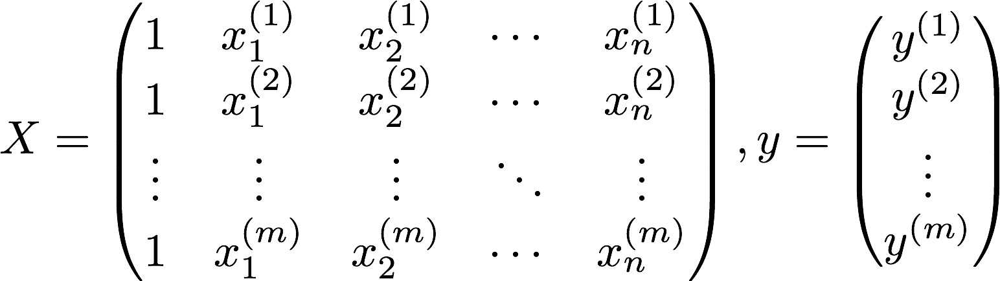
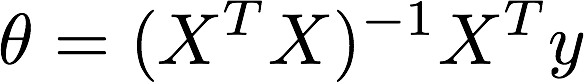
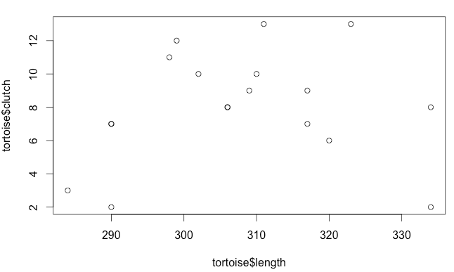

Linear Regression Practical¶
This practical will explore linear and polynomial regression using R.
Before you start¶
Running R studio¶
This practical using R studio. Ensure that you can run R Studio.
Installing the packages¶
The practical will use a number of R packages. Before you use this packages you need to load them:
library(shiny)
library(ggplot2)
library(lattice)
library(scatterplot3d)
Ggplot2, lattice and scatterplot3d are data visualisation and graph drawing packages. Shiny is a package that supports web-based user interfaces to dynamic R data analysis. We shall see this in use during the practical.
If any of these packages fail to load then you can install them with the commands below. Please do not do this unless you have to as R does not check if they exist before downloading the packages and it will take a while to install them:
install.packages("shiny")
install.packages("ggplot2")
install.packages("lattice")
install.packages("scatterplot3d")
Downloading the files¶
Download the practical R files and data using git:
git clone https://allyhume@bitbucket.org/allyhume/LinearRegressionPractical.git
Single variable linear regression¶
Linear regression fits a straight line model to a database to minimise the sum of square errors cost function. To get a feel for this task we will try to do it by hand.
In the R Studio console window set the working directory to where you downloaded the practical files:
setwd("/PATH/TO/LinearRegressionPractical/R")
Now run the linear regession Shiny application:
runApp("LinearRegression2D")
The following browser window should appear:
{kind=link}
Here we are trying to fit a linear model to predict the weight of cats’ hearts (in g) from their body weight (in kg) (more details of this dataset)
Play with the slides on this window to change the model parameters and watch the sum of square errors cost function value change as you do so. Can you find the parameters that give the minimum score?
Note
This is the basis for many machine learning techniques
What you have just done is the basis of many machine learning techniques. Selecting a model to fit the data and then deciding the parameters of that model to minimise a particular cost function is at the core of many machine learning techniques.
To exit the Shiny application click the Stop button in the top right hand corner of R Studo’s Console pane.
Data exploratory analysis¶
We will explore the public dataset mtcars. This data was extracted from the 1974 Motor Trend US magazine, and comprises fuel consumption and 10 aspects of automobile design and performance for 32 automobiles (1973-74 models). You can view this in R:
> mtcars
mpg cyl disp hp drat wt qsec vs am gear carb
Mazda RX4 21.0 6 160.0 110 3.90 2.620 16.46 0 1 4 4
Mazda RX4 Wag 21.0 6 160.0 110 3.90 2.875 17.02 0 1 4 4
Datsun 710 22.8 4 108.0 93 3.85 2.320 18.61 1 1 4 1
Hornet 4 Drive 21.4 6 258.0 110 3.08 3.215 19.44 1 0 3 1
...
You can view basic descriptive statistics of this dataset using the summary command:
> summary(mtcars)
mpg cyl disp hp drat wt
Min. :10.40 Min. :4.000 Min. : 71.1 Min. : 52.0 Min. :2.760 Min. :1.513
1st Qu.:15.43 1st Qu.:4.000 1st Qu.:120.8 1st Qu.: 96.5 1st Qu.:3.080 1st Qu.:2.581
Median :19.20 Median :6.000 Median :196.3 Median :123.0 Median :3.695 Median :3.325
Mean :20.09 Mean :6.188 Mean :230.7 Mean :146.7 Mean :3.597 Mean :3.217
3rd Qu.:22.80 3rd Qu.:8.000 3rd Qu.:326.0 3rd Qu.:180.0 3rd Qu.:3.920 3rd Qu.:3.610
Max. :33.90 Max. :8.000 Max. :472.0 Max. :335.0 Max. :4.930 Max. :5.424
qsec vs am gear carb
Min. :14.50 Min. :0.0000 Min. :0.0000 Min. :3.000 Min. :1.000
1st Qu.:16.89 1st Qu.:0.0000 1st Qu.:0.0000 1st Qu.:3.000 1st Qu.:2.000
Median :17.71 Median :0.0000 Median :0.0000 Median :4.000 Median :2.000
Mean :17.85 Mean :0.4375 Mean :0.4062 Mean :3.688 Mean :2.812
3rd Qu.:18.90 3rd Qu.:1.0000 3rd Qu.:1.0000 3rd Qu.:4.000 3rd Qu.:4.000
Max. :22.90 Max. :1.0000 Max. :1.0000 Max. :5.000 Max. :8.000
What information is the above providing?
You can plot all the variables against each other with a scatterplot matrix using the R command pairs:
> pairs(mtcars, main = “mtcars data”, pch=16)
The following image should appear:
{kind=link}
This is a great way to roughly determine if there is any linear correlation between multiple variables. You can subset the plot to those variables that seem to have a linear correlation using the R subset command:
> pairs(subset(mtcars, select=c(“mpg”, “wt”, “disp”)), main = “mtcars data”, pch=16)
The following image should appear:
{kind=link}
Multiple variable linear regression¶
Now we will explore linear regression using more than one variable.
Run the linear regression 3D Shiny application:
runApp("LinearRegression3D")
The following browser window should appear:
{kind=link}
Here we are trying to predict predict the number of miles a car can drive for each gallon of petrol (mpg) using the weight (wt in lb/1000) of the car and its engine displacement (disp in cu.in.) (more details of this dataset)
As you can see when two variable as used the linear model is a plane rather than a line. Again you can use the sliders to try to minimse the cost function.
We will now try to use the matrix version of the normal equation to find the optimal parameters for this model. The matrix version requires to matrices X and y defined as:
{kind=link}
We will now construct these matrices on the R console so you will need to quit the Shiny application by clicking on the Stop button.
The cars data is in a data frame called mtcars. You can view this in R:
> mtcars
mpg cyl disp hp drat wt qsec vs am gear carb
Mazda RX4 21.0 6 160.0 110 3.90 2.620 16.46 0 1 4 4
Mazda RX4 Wag 21.0 6 160.0 110 3.90 2.875 17.02 0 1 4 4
Datsun 710 22.8 4 108.0 93 3.85 2.320 18.61 1 1 4 1
Hornet 4 Drive 21.4 6 258.0 110 3.08 3.215 19.44 1 0 3 1
...
We wish the y matrix to the mpg values that our model will predict:
y <- data.matrix(subset(mtcars, select=c("mpg")))
The select part of the above line specifies the names of the columns to select. Use a similar line to
start to build the X matix with columns wt and disp. Your aim is to have an X matrix that
looks like:
> X
wt disp
Mazda RX4 2.620 160.0
Mazda RX4 Wag 2.875 160.0
Datsun 710 2.320 108.0
Hornet 4 Drive 3.215 258.0
Hornet Sportabout 3.440 360.0
Valiant 3.460 225.0
Duster 360 3.570 360.0
Merc 240D 3.190 146.7
Merc 230 3.150 140.8
Merc 280 3.440 167.6
Merc 280C 3.440 167.6
Merc 450SE 4.070 275.8
Merc 450SL 3.730 275.8
Merc 450SLC 3.780 275.8
Cadillac Fleetwood 5.250 472.0
Lincoln Continental 5.424 460.0
Chrysler Imperial 5.345 440.0
Fiat 128 2.200 78.7
Honda Civic 1.615 75.7
Toyota Corolla 1.835 71.1
Toyota Corona 2.465 120.1
Dodge Challenger 3.520 318.0
AMC Javelin 3.435 304.0
Camaro Z28 3.840 350.0
Pontiac Firebird 3.845 400.0
Fiat X1-9 1.935 79.0
Porsche 914-2 2.140 120.3
Lotus Europa 1.513 95.1
Ford Pantera L 3.170 351.0
Ferrari Dino 2.770 145.0
Maserati Bora 3.570 301.0
Volvo 142E 2.780 121.0
When you have this you can now add on the column of 1s to the first column of the matrix. This is easily done in R using the cbind command:
X <- cbind(1,X)
We are now ready to solve for the parameters using the equation:
{kind=link}
Build up this equation in R. The following functions and operators will prove useful:
A %*% Bis used for matrix multiplicationt(A)is used for the transpose of matrix Asolve(A)returns the inverse of matrix A
Do the co-efficient returned correspond to the minium cost function score when entered to the Shiny application? Test this is so by running the application again:
runApp("linearRegression3D")
Now use the co-efficients returned to predict the mpg for the Volvo 142E using the weight and displacement figures shown above for that vehicle.
Hints:
- You can simply use matrix multiplication to multiply a vector containing the required values by the co-efficients matrix - remember to include the value 1 as the first value of your 3 values vector.
- You can constuct your feature values vector simply by using
c(1, wt, disp)with the appropriate values forwtanddisp.
The predicted value for the Volvo 142E should be 23.50057 mpg.
Multiple variable linear regression using R’s built in functions¶
R has build in functions to support linear regression. All the work we have done above and more can be done simply by calling:
model <- lm(mtcars$mpg ~ mtcars$wt + mtcars$disp)
You can look at the co-efficients returned by viewing the model:
> model
Call:
lm(formula = mtcars$mpg ~ mtcars$wt + mtcars$disp)
Coefficients:
(Intercept) mtcars$wt mtcars$disp
34.96055 -3.35083 -0.01772
The variable model$fitted.values contains the values of the fitted model. The variable model$residuals
contains the differences between these fitted values and the data values. Use this to calculate
the sum of the squared errors for the model. Is the value similar to the minimum cost shown on the
Shiny application for these coefficients?
Hint:
- the R function
sumwill sum all the values in a vector. Alternatively, the operator%*%performs the dot product of two vectors.
The R command summary provides basic evaluation statistics of the fitted model, including the coefficient t-statistics, and the R-squared values:
> summary(model)
Call:
lm(formula = mtcars$mpg ~ mtcars$wt + mtcars$disp)
Residuals:
Min 1Q Median 3Q Max
-3.4087 -2.3243 -0.7683 1.7721 6.3484
Coefficients:
Estimate Std. Error t value Pr(>|t|)
(Intercept) 34.96055 2.16454 16.151 4.91e-16 ***
mtcars$wt -3.35082 1.16413 -2.878 0.00743 **
mtcars$disp -0.01773 0.00919 -1.929 0.06362 .
---
Signif. codes: 0 ‘***’ 0.001 ‘**’ 0.01 ‘*’ 0.05 ‘.’ 0.1 ‘ ’ 1
Residual standard error: 2.917 on 29 degrees of freedom
Multiple R-squared: 0.7809, Adjusted R-squared: 0.7658
F-statistic: 51.69 on 2 and 29 DF, p-value: 2.744e-10
What can we conclude from the above? Can we perform any feature selection?
Polynomial regression¶
Polynomial regression can be used to fit non-linear models to data. It uses linear regression and simply adds polynomial terms to the set of feature values. Consider the following data set:
{kind=link}
Here we plot tortoise carapace (shell) length and clutch size (number of eggs). This data is from Ashton, K.G., R.L. Burke, and J.N. Layne. 2007. Geographic variation in body and clutch size of gopher tortoises. Copeia 2007: 355-363.
It does not look like there is an obvious linear fit to this data but let’s try to use linear regression to predict clutch size from length:
tortoise <- read.csv('tortoise.csv')
model <- lm(tortoise$clutch ~ tortoise$length)
We can now plot this data and the linear model:
plot(tortoise$length, tortoise$clutch)
abline(model, col='red')
Does this look like a great fit to the data?
Use the same method as before to calculate the sum of the square errors. It should be 186.152.
Execute summary(model) to evaluate its statistics. What can we conclude from the R-squared statistic?
Let’s see if we do better with polynomial regression without seriously overfitting the model?
We will add the square of the length as an additional feature to the feature set:
tortoise$lengthSq <- tortoise$length^2
Now use the R lm function is use this additional feature in your linear regression.
What is the sum of square errors cost function for this model? It should be 106.9736.
We can plot the fitted values onto the graph with lines between them to quickly show the shape of the new polynomial model:
points(tortoise$length, polynomialModel$fitted.values, type='l', col = 'green')
The model does seem to capture the data better and reflects that very large tortoises tend to lay fewer eggs than middle sized tortoises.
Execute summary(model) to evaluate its statistics. What can we conclude from the R-squared statistic, compared to the previous model?
Futher work: Higher degree polynomials¶
Invesitage the impact of adding higher degree polynomials (cubed, 4th power, 5th power etc) to the tortoise data. Does it lead to a lower cost score? Does the model look overfitted when plotted? Is the decrease in cost function justified by the additional complexity of the model and hence the increased danger of overfitting.
Further work: Playing with Shiny¶
This is really only for those that are especially interested in R and have time to spare during the lab session...
The early stages of the lab used Shiny to develop the web interactive
web apps. Each Shiny application is a directory that contains a user interface file called ui.R
and a server file called server.R. Look at these files in the applications here and the examples
on the Shiny documentation and explore a bit more about the functionality.
Can you write a Shiny application that uses the tortoise data and draws the fitted data line for
whatever degree of polynomial the user selects for the model? Don’t bother implementing slides
for the various paramters of the model - just let the user specify the degree of polynomial and
use the R lm function to fit model.